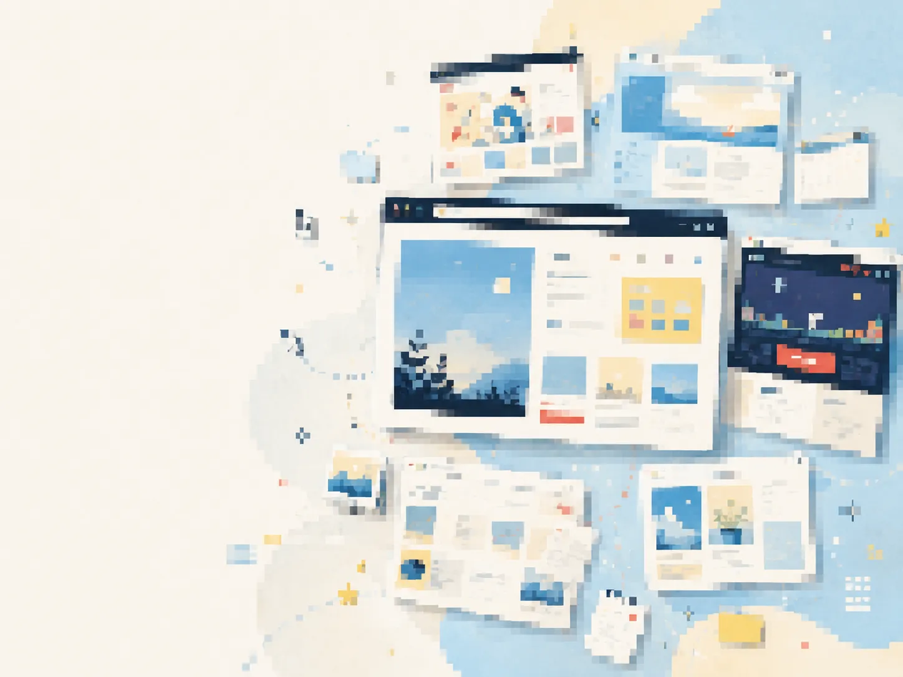

まず良かったところ
- 無料・広告なし・1GBという価値が明確
- 初心者から上級者まで使える機能が揃っている
- 個人サイト運営に必要な周辺サービスがある
Gallery 001
無料ホームページ文化を、現代の入口へ。
1GB無料、広告なし、FTP対応、掲示板、カウンター、拍手。SNS以前の「自分の場所をWebに作る」文化を、現代の導線設計で再構成します。


はじめてのホームページに、ちゃんと自分の場所を。
SNSでもブログでもない、自分だけのWebスペースを持つ楽しさを現代のUIで伝える。
このサイトの良さは、機能の多さよりも「自分の場所を持てる」感覚にあります。現代化するなら、古い要素を消すのではなく、もう一度“個人サイトを持つ楽しさ”として並べ直したいです。